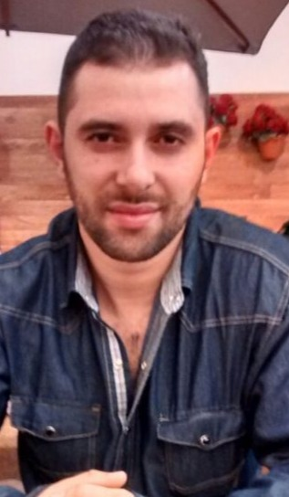

2002 — O Silêncio e a Doutrina
O Início Isolado: Minha história ganha corpo em um cenário de contrastes. Enquanto o Brasil celebrava o pentacampeonato, eu vivia em um universo paralelo, isolado por uma doutrina rígida na igreja "Deus é Amor". Sem televisão, sem notícias, apenas o silêncio da fé imposta e as dificuldades financeiras. Foi ali, entre pães caseiros e orações, que tive meu primeiro despertar espiritual.
2010 - 2014 — O Despertar do Questionamento
A Quebra das Correntes: Após anos de altos e baixos, a Assembleia de Deus foi meu porto seguro até que o conhecimento bateu à porta de forma inesperada. Ao encontrar questionamentos sobre as doutrinas tradicionais, minhas certezas desmoronaram. Fui chamado de louco e desviado, mas a solidão tornou-se minha maior escola de investigação independente.
2020 — O Encontro com o Código
Em meio à pandemia e ao desemprego, a Numerologia Cabalística surgiu não como uma curiosidade, mas como uma missão. Através de Carlos Rosa, percebi que os números eram a linguagem do ser. Usei aquele tempo de restrições para se aprofundar nos estudos e decodificar minha própria identidade simbólica.
"Se antes eu acreditava por medo, hoje eu compreendo por consciência. Se antes eu seguia verdades impostas, hoje busco verdades fundamentadas."
2022 - Presente — A Síntese Científica
O encontro com Reinaldo Garcia (Rei Garcia) foi o choque de realidade que eu precisava. Ele me libertou da ingenuidade espiritual. Com ele, a numerologia deixou de ser apenas esotérica para se tornar científica, lógica e estruturada.

Maike Santana é um exemplo de resiliência. Através de sua obra, ele compartilha como transformou dores físicas profundas e diagnósticos crônicos em uma jornada de despertar espiritual. Ex-praticante de esportes e entusiasta de uma vida active, ele encontrou na escrita e na introspecção a salvação para os desafios impostos pela Distrofia Muscular e pela Doença de Crohn.
Mais que um autor, Maike é uma alma íntegra que impacta a todos com sua história de superação constante, provando que a verdadeira liberdade reside no interior.
Agradecimentos do Autor
“Aos familiares e amigos que interferiram em minha vida compartilhando afetos, mas também às pessoas que trombaram em minha trajetória indiretamente, pois admito que grande parte do meu jardim floresceu por causa de cada muda plantada por um destes!”
Doença de Crohn
Condição inflamatória crônica do trato digestivo. Exige disciplina, tratamentos intensos e uma força mental inabalável para lidar com a fadiga e os sintomas recorrentes.
Distrofia Muscular
Desafio genético que causa a fraqueza progressiva dos músculos. Uma batalha que Maike enfrenta buscando na essência espiritual a mobilidade que o corpo limita.

A história da Numerologia Cabalística moderna no Brasil tem um marco inicial claro: o trabalho de Carlos Rosa. Em 2002, ele fundou a Academia Brasileira de Numerologia Cabalística (ABNC), tornando-se o principal responsável por trazer esse conhecimento ancestral para o público brasileiro de forma estruturada e didática.
Através de suas obras e ensinos, Carlos Rosa desmistificou o uso da Gematria e a aplicação da Tabela Cabalística, defendendo que os números são a linguagem fundamental do universo.
Uma Conexão de Propósito
"Minha trajetória com os números começou a ganhar forma em 2019. (...) Foi através dos vídeos e das lições de Carlos Rosa que encontrei a Numerologia — não apenas como uma teoria, mas como uma ferramenta de praticidade absoluta. Ele foi a ponte que me permitiu sair de um estado de incerteza para um caminho de clareza técnica."
Da Tradição à Ciência
Honro o misticismo que ele apresentou, pois foi ele que pavimentou o caminho. No entanto, meu compromisso atual é levar esse legado para o próximo nível: o da comprovação por padrões, do estudo cerebral e da psicologia aplicada. Carlos Rosa trouxe a chave; meu trabalho é aplicar essa chave na engenharia do comportamento humano moderno.

Reinaldo Martins Garcia é a personificação do equilíbrio entre a mente analítica e a percepção metafísica. Engenheiro e empresário por formação, Reinaldo trouxe para o universo da numerologia o rigor científico que o campo necessitava. Atuando como numerólogo cabalista, tarólogo e palestrante, seu trabalho é um convite à evolução da consciência.
Diferente das abordagens puramente místicas, o "Rei Garcia" fundamenta sua prática na Numerologia Quântica, utilizando conceitos de física e frequência para harmonizar energias.
A Ponte para a Ciência
"Reinaldo Garcia foi o mestre que equilibrou minha jornada. Se o início do meu caminho foi marcado pela fé e pelo misticismo, foi com o Reinaldo que aprendi a centrar meus estudos na modernidade científica. Ele me deu a mentalidade necessária para construir ferramentas científicas que realmente transformam a vida das pessoas."